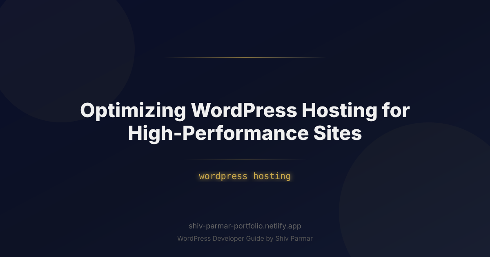

Optimizing WordPress Hosting for High-Performance Sites
Table of Contents
In the digital landscape, website performance is no longer just a technical metric—it is the ultimate catalyst for user retention, search engine visibility, and business revenue. A delay of even a few hundred milliseconds can cause bounce rates to surge, cart abandonments to spike, and hard-earned search rankings to plumet. As the web platform powering over 43% of all websites globally, WordPress offers unprecedented flexibility, but its underlying performance relies heavily on how its hosting environment is architected and tuned.
Many webmasters, developers, and business owners fall into the trap of assuming that installing a lightweight theme and a caching plugin is sufficient for peak speed. However, frontend optimizations can only mask poor infrastructure for so long. Real, sustained site speed originates at the server level. Optimizing your wordpress hosting environment ensures your server responds instantly, processes database queries efficiently, and serves assets without bottlenecking under heavy concurrent traffic.
Whether you are managing a high-traffic e-commerce store, a busy news portal, or a scalable SaaS marketing platform, this definitive WordPress guide explores the mechanics of high-performance hosting. From low-level server tweaks to edge computing configurations, you will learn how to unlock the true potential of your WordPress application infrastructure.
What is WordPress Hosting Optimization?
WordPress hosting optimization is the process of fine-tuning both the server hardware architecture and backend software stack specifically for the operational patterns of WordPress. Unlike static website hosting—where pre-rendered HTML files are served straight from disk—WordPress is a dynamic Content Management System (CMS). Every time an uncached request hits a WordPress site, the server must run the PHP engine, load core files, execute active plugins, compile the theme logic, query the MySQL or MariaDB database, and render the final HTML response back to the client.
Server-level optimization focuses on minimizing the overhead of this execution path. It spans multiple layers of your hosting architecture:
- Web Server Engine: Configuring modern web servers like Nginx or LiteSpeed to handle high concurrency with minimal CPU and RAM usage.
- PHP Execution Environment: Tuning PHP-FPM (FastCGI Process Manager), allocated memory, thread workers, and bytecode caching (OPcache).
- Database Server Tuning: Configuring MySQL/MariaDB query buffers, index pools, engine parameters, and regularly cleaning dynamic storage tables.
- Object and Page Caching Layers: Utilizing persistent in-memory data stores like Redis or Memcached to prevent redundant database lookups, combined with server-level page caching like FastCGI Cache or LiteSpeed Enterprise.
- Network and Edge Architecture: Routing traffic through global Content Delivery Networks (CDNs) and leveraging HTTP/3, Brotli compression, and Anycast routing to bring content closer to the end user.
When these components operate in harmony, server response time—measured as Time to First Byte (TTFB)—drops drastically. Instead of taking 800ms to 1.5 seconds to deliver the initial payload, an optimized hosting environment delivers response times under 100ms, providing a lightning-fast foundation for your site.
Why WordPress Hosting Optimization Matters in 2026
The web ecosystem has evolved rapidly, and user expectations for page load speeds are at an all-time high. Search engines like Google prioritize user experience through Core Web Vitals metrics. While Largest Contentful Paint (LCP) and Cumulative Layout Shift (CLS) remain crucial, metrics like Interaction to Next Paint (INP) demand low latent server responses and rapid JavaScript execution.
In modern web search, AI-driven search bots and web crawlers consume massive amounts of server resources. Sites with slow response times suffer from throttled crawl budgets, meaning search engines index new or updated content less frequently. Furthermore, user behavior studies show that modern site visitors expect pages to load in under two seconds; beyond that threshold, conversion rates drop by over 7% per second of delay.
| Performance Metric | Standard Unoptimized Hosting | Optimized High-Performance Hosting | Impact on Site Success | }
|---|---|---|---|
| Time to First Byte (TTFB) | 600ms - 1500ms | 50ms - 150ms | Determines baseline server response speed globally. |
| Interaction to Next Paint (INP) | > 300ms (Needs Improvement) | < 100ms (Good) | Crucial for Google ranking and interactive UI responsiveness. |
| Max Concurrent Users | 20 - 50 simultaneous users | 500 - 5,000+ simultaneous users | Prevents server crashes during high-traffic marketing spikes. |
| Server Resource Utilization | High CPU spikes, frequent 504 timeouts | Stable CPU footprint, predictable memory usage | Reduces infrastructure costs while ensuring 99.99% uptime. |
Investing in server-level optimization is not merely about achieving green scores on speed tests; it is a direct investment in your site's conversion rates, search engine visibility, operational efficiency, and security resilience.
Step-by-Step Guide to Optimizing WordPress Hosting
1. Choose the Right Hosting Architecture
The journey to high performance begins with selecting an infrastructure model that matches your site's operational scale. Cheap shared hosting environments pack thousands of websites onto a single physical server, forcing your site to contend for pooled CPU cores, system memory, and disk I/O operations. This leads to unpredictable performance bottlenecks known as the "noisy neighbor effect."
| Hosting Environment | Pros | Cons | Ideal Use Case |
|---|---|---|---|
| Shared Hosting | Low cost, automated management | Strict resource limits, high latency, volatile speed | Personal blogs, low-traffic hobby sites |
| Managed WordPress Hosting | Pre-configured stacks, automated backups, expert support | Higher cost, plugin restrictions, limited root access | Business sites, e-commerce stores, agencies |
| Unmanaged Cloud VPS (AWS/GCP/DigitalOcean) | Full control, highly scalable, cost-effective | Requires system administration skills, manual security setup | SaaS apps, tech teams, custom high-scale platforms |
For high-performance needs, select a provider that offers isolated containerized resources (such as LXC or Docker instances), NVMe SSD storage, and modern hardware processing power (such as AMD EPYC or Ampere Altra chips).
2. Optimize the PHP Runtime & OPcache Settings
WordPress is compiled dynamically by PHP on every request. Upgrading to the latest stable version of PHP (such as PHP 8.2 or PHP 8.3) yields instant performance improvements, as newer versions introduce specialized JIT (Just-In-Time) compilation enhancements and memory handling optimizations.
Beyond versioning, tuning PHP's Bytecode Cache (OPcache) is critical. OPcache stores precompiled script bytecode in shared memory, eliminating the overhead of parsing PHP scripts on every execution.
Add or update the following configuration directives in your server's php.ini file:
; PHP OPcache High-Performance Configuration
opcache.enable=1
opcache.enable_cli=1
opcache.memory_consumption=512
opcache.interned_strings_buffer=64
opcache.max_accelerated_files=50000
opcache.max_wasted_percentage=15
opcache.validate_timestamps=0
opcache.revalidate_freq=0
opcache.save_comments=1
opcache.fast_shutdown=1
Note: Setting opcache.validate_timestamps=0 delivers maximum performance because PHP will not check for code modifications on every request. However, you must clear the OPcache manually or via your deployment pipeline whenever plugin or theme code changes.
Additionally, optimize your PHP-FPM pool manager inside /etc/php/8.3/fpm/pool.d/www.conf to handle concurrent requests effectively:
pm = dynamic
pm.max_children = 50
pm.start_servers = 10
pm.min_spare_servers = 5
pm.max_spare_servers = 20
pm.max_requests = 1000
3. Implement Advanced Server-Level Caching
Application-level PHP plugins are useful, but server-level caching is exponentially faster. When page caching is handled directly by Nginx or LiteSpeed, requests for cached pages bypass PHP compilation and MySQL database queries entirely. The web server reads the compiled HTML file straight from shared memory or disk and serves it to the browser immediately.
Nginx FastCGI Cache Configuration Example
Add the following block into your primary HTTP context within /etc/nginx/nginx.conf:
# Define FastCGI Cache Path and Parameters
fastcgi_cache_path /var/run/nginx-cache levels=1:2 keys_zone=WORDPRESS:100m inactive=60m max_size=2g;
fastcgi_cache_key "$scheme$request_method$host$request_uri";
fastcgi_cache_use_stale error timeout updating invalid_header http_500 http_503;
fastcgi_ignore_headers Cache-Control Expires Set-Cookie;
Then, update your site's server block to set caching rules, ensuring logged-in users and cart endpoints bypass the cache:
server {
listen 443 ssl http2;
server_name example.com;
set $skip_cache 0;
# POST requests and URLs with query strings should bypass the cache
if ($request_method = POST) {
set $skip_cache 1;
}
if ($query_string != "") {
set $skip_cache 1;
}
# Don't cache specific WooCommerce or WordPress admin paths
if ($request_uri ~* "/wp-admin/|/xmlrpc.php|wp-.*.php|^/feed/*|/cart/|/checkout/|/my-account/") {
set $skip_cache 1;
}
# Don't cache for logged-in users or recent commenters
if ($http_cookie ~* "comment_author|wordpress_logged_in|woocommerce_items_in_cart") {
set $skip_cache 1;
}
location ~ \.php$ {
include fastcgi_params;
fastcgi_pass unix:/run/php/php8.3-fpm.sock;
fastcgi_param SCRIPT_FILENAME $document_root$fastcgi_script_name;
fastcgi_cache WORDPRESS;
fastcgi_cache_bypass $skip_cache;
fastcgi_no_cache $skip_cache;
fastcgi_cache_valid 200 301 302 60m;
add_header X-FastCGI-Cache $upstream_cache_status;
}
}
Persistent Object Caching with Redis
While page caching serves static content to unauthenticated visitors, logged-in users (like WooCommerce shoppers or site administrators) trigger dynamic PHP execution on every interaction. An Object Cache stores raw database query results in memory using Redis or Memcached so that identical queries execute in microsecond speeds.
To enable Redis persistent object caching in your wp-config.php file, add the following constants:
// Enable Redis Persistent Object Cache Configuration
define('WP_CACHE', true);
define('WP_REDIS_HOST', '127.0.0.1');
define('WP_REDIS_PORT', 6379);
define('WP_REDIS_TIMEOUT', 1);
define('WP_REDIS_READ_TIMEOUT', 1);
define('WP_REDIS_DATABASE', 0);
define('WP_REDIS_MAXTTL', 86400);
4. Database Tuning & Autoloaded Data Cleanup
The MySQL/MariaDB database is often the primary cause of latency spikes in WordPress. As a site grows, tables like wp_options, wp_postmeta, and wp_comments fill up with orphaned records, temporary transients, and poorly designed plugin indices.
MySQL InnoDB Tuning
Update your database configuration file (/etc/mysql/my.cnf or /etc/mysql/mariadb.conf.d/50-server.cnf) to grant adequate system RAM for caching indices and table data:
[mysqld]
# Allocate 60-70% of total dedicated server RAM for InnoDB Buffer Pool
innodb_buffer_pool_size = 4G
innodb_buffer_pool_instances = 4
innodb_log_file_size = 512M
innodb_flush_log_at_trx_commit = 2
innodb_flush_method = O_DIRECT
max_connections = 300
query_cache_type = 0
query_cache_size = 0
Optimizing the wp_options Autoload Data
Whenever a page renders, WordPress automatically loads every record in the wp_options table where autoload = 'yes' into memory. If your autoloaded data exceeds 1MB to 2MB, site speed drops substantially.
You can identify top memory-draining options by executing the following query via MySQL command line or phpMyAdmin:
-- Find Top 20 Autoloaded Options by Size
SELECT option_name, LENGTH(option_value) AS option_size_bytes
FROM wp_options
WHERE autoload = 'yes'
ORDER BY option_size_bytes DESC
LIMIT 20;
If you discover outdated plugins storing large datasets (such as transient logs or analytics payloads) in the options table, update those records to autoload = 'no' or delete them safely.
5. Integrate Edge Computing & Next-Gen CDNs
Even a perfectly optimized origin server suffers network latency delays when transmitting data across international borders. Integrating a modern Content Delivery Network (CDN) like Cloudflare, Fastly, or AWS CloudFront bridges this geographical gap.
Rather than relying on CDNs solely to deliver images and CSS files, leverage Edge Caching or Automatic Platform Optimization (APO). Edge caching caches the entire dynamic HTML document directly at hundreds of data centers around the globe. When a user in Sydney visits a server hosted in Virginia, the HTML payload is served instantly from the Sydney POP node in under 20ms.
Furthermore, ensure your hosting infrastructure supports HTTP/3 (QUIC) and Brotli compression. Brotli yields compression ratios up to 20% higher than traditional Gzip, dramatically shrinking the payload size of text assets.
Add these Brotli settings inside your Nginx server module:
# Enable Brotli Compression
brotli on;
brotli_comp_level 6;
brotli_types text/plain text/css application/javascript application/json image/svg+xml application/xml;
Best Practices for High-Performance WordPress Hosting
Maintaining a fast environment requires consistent workflows, active system monitoring, and automated tasks. Follow these essential operational best practices to keep your host performing optimally over time:
Enforce Database Maintenance via WP-CLI Cron Jobs
Avoid relying on browser-triggered WordPress pseudo-cron operations (`wp-cron.php`). Heavy automated background processes can disrupt real user page loads. Instead, disable default WP-Cron and set up a true system cron job on your server.
Add this line to your wp-config.php file:
define('DISABLE_WP_CRON', true);
Then, configure your server's crontab (`crontab -e`) to invoke the WP-CLI background process every 5 or 10 minutes:
*/10 * * * * /usr/local/bin/wp cron event run --due-now --path=/var/www/html >/dev/null 2>&1
Leverage Application Performance Monitoring (APM) Tools
When slowdowns occur, guessing which component failed leads to wasted effort. Utilize Application Performance Monitoring (APM) systems like New Relic APM or Datadog. These server agents attach directly to the PHP execution layer to pinpoint sluggish database queries, unoptimized external API calls, and resource-heavy plugins in real time.
+-------------------------------------------------------------------------+
| PHP Application Execution Stack |
+-------------------------------------------------------------------------+
| [ HTTP Request ] --> [ Server Layer: Nginx / FastCGI Page Cache ] |
| | (If Cache Miss) |
| v |
| [ PHP 8.3 FPM Process ] |
| | |
| +----------------------+----------------------+ |
| | | | |
| v v v |
| [ OPcache Memory ] [ Redis Object Cache ] [ MySQL/MariaDB Storage ] |
+-------------------------------------------------------------------------+
Set Strict WP Engine Memory Boundaries
Ensure that WordPress PHP execution limits align cleanly with your server instance specs. Define optimal boundaries directly inside your core configuration script:
// Enforce Strict WP Memory Allocation
define('WP_MEMORY_LIMIT', '256M');
define('WP_MAX_MEMORY_LIMIT', '512M');
define('AUTOSAVE_INTERVAL', 120); // Reduce Heartbeat Write Frequency
define('EMPTY_TRASH_DAYS', 7); // Auto-purge Trash Records Weekly
Common Mistakes to Avoid
Even seasoned developers often fall into common traps when setting up their wordpress hosting infrastructure. Avoid these operational missteps to preserve speed and stability:
- Relying Exclusively on Frontend Caching Plugins: Plugins like WP Rocket or LiteSpeed Cache are powerful, but running them on top of slow, bloated shared hosting cannot solve core server constraints. Prioritize infrastructure optimization first.
- Over-Allocating PHP Workers: Adding too many PHP-FPM workers to a low-tier server can cause system failure. If your server has 2 CPU cores, setting `pm.max_children = 200` will lead to intensive context switching, exhausting memory and crashing your server during high-traffic events. Keep worker pools aligned with real CPU core capacity.
- Ignoring Transients and Revisions Accumulation: Allowing unlimited post revisions and stale transient objects to pile up inflates your database size quickly. Restrict post revisions in `wp-config.php` using
define('WP_POST_REVISIONS', 5);. - Running Unused Plugins and Database Engines: Deactivating a plugin does not prevent its database overhead or autoloaded options from lingering. Always uninstall unneeded plugins completely, and run database cleanup scripts periodically to remove unused tables.
- Neglecting SSL/TLS Performance Configurations: Outdated SSL handshake parameters add hundreds of milliseconds of delay before assets even begin loading. Always configure modern TLS 1.3 protocol support and enable OCSP Stapling at your server level.
Conclusion
Optimizing your wordpress hosting setup is no longer optional if you want to run a successful, high-performance website. By choosing the right server architecture, implementing advanced caching, and keeping your database lean, you can ensure your WordPress site delivers lightning-fast load times and an exceptional user experience. We hope this comprehensive WordPress guide has provided you with actionable insights to elevate your platform's speed, security, and search engine rankings.
Remember that performance optimization is an ongoing process rather than a one-time fix. As your traffic grows, continuously monitoring server metrics and refining your configuration will keep your digital presence ahead of the competition. Investing the time to properly fine-tune your hosting infrastructure will always yield measurable returns in user engagement and conversion rates.
If you are looking for expert assistance to audit, optimize, or scale your platform, Shiv Parmar is available for WordPress development work worldwide. Whether you need custom speed optimizations, server migrations, or tailored development solutions, feel free to reach out to take your website to the next level.